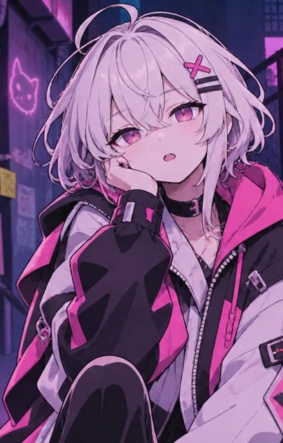
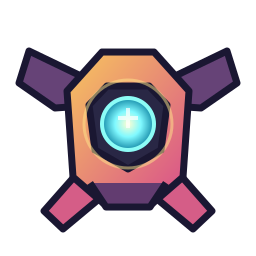

✦ 네온 방치단 MOBILE 40
환생 · 생산 계층 · 단계별 자동화 중심의 새로운 실험 빌드


⚔ 장비·스킬
STAGE 15부터 무기, 20부터 스킬을 획득해. 재구성 시 계승 지정 스킬만 LV.1로 유지돼. 수치는 임시야.
✦ 주인공 특성
스킬 가속·장비 탐색은 임시 적용 중이야. 계승 확장은 LV.60부터 투자할 수 있어.
◎ 성장 목표
01 · 기본 성장
전투에서 크레딧을 얻고, 발전기로 에너지를 생산해. 에너지는 전투력 증폭에 쓰여. 각 생산 계층은 다른 역할을 맡아.
균형 운용
필요에 따라 언제든 전환 가능. 재구성 시 초기화돼.◇ 정기 크레딧 회수
적을 처치하지 않아도 60초마다 크레딧이 쌓여. 최대 5회분까지 저장되며 직접 회수할 수 있어. 주조기의 지속 생산과 별개야.
02 · 재구성
스테이지 100부터 가능. 기본 성장과 현재 스테이지를 초기화하고 영구 코어를 얻어. 최고 기록과 해금 이력은 유지돼.
03 · 자동화
첫 재구성 이후 자동 구매가 열리고, 코어로 자동화 수준을 강화할 수 있어. 이전 구간의 반복 조작을 줄이는 것이 목표야.
04 · 위상 전환
스테이지 180과 재구성 2회부터 가능. 재구성 계층까지 초기화하고 새로운 영구 생산 효율을 얻어.
첫 위상 전환 이후 위상 흐름 생산과 압축 연구가 열려. 위상 압축은 이후 환생의 시작 조건과 보상을 변경해.
◇ 심층 구역 · 영구 탐험
돌파한 층은 모든 환생 후에도 유지돼. 다음 입장은 항상 미돌파 층이야. 전투는 현재 전선 전투력을 사용해.
탐험 분기
이번 층에서 접근법을 선택하면 자동 전투가 시작돼. 전투력은 현재 전선의 성장 상태를 그대로 사용해.
다음 층의 접근법을 선택해.
◇ 영구 연구
심층 결정 전용 투자처야. 모든 환생 이후에도 유지되며, 최대 단계까지 모두 연구할 수 있어.
캐릭터 외형
캐릭터와 의상은 전투 능력치에 영향을 주지 않아. 추가 외형은 이미지 준비 후 선택할 수 있어.
설정
최대 2시간 오프라인 생산을 계산해. 자동 환생은 오프라인에서 실행하지 않아.
상세 통계
상세 기록은 필요할 때만 이 탭에서 확인해.